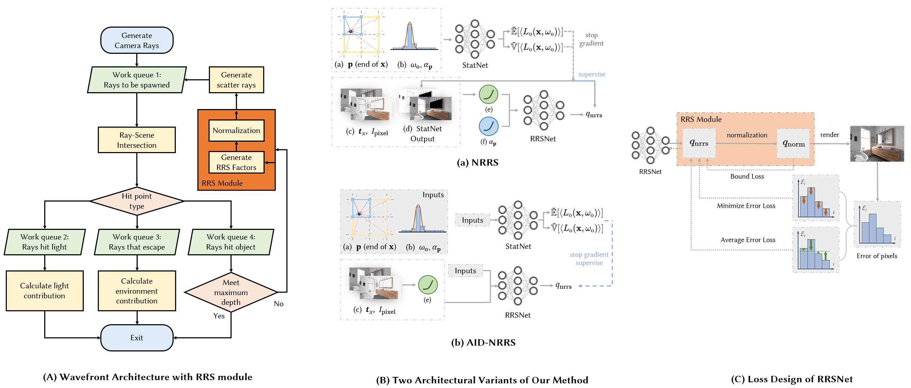

IEEE TVCG · 2026
NRRS: Neural Russian Roulette and Splitting
Peking University

Abstract
We propose a novel framework for Russian Roulette and Splitting (RRS) tailored to wavefront path tracing, a highly parallel rendering architecture that processes path states in batched, stage-wise execution for efficient GPU utilization. Traditional RRS methods, with unpredictable path counts, are fundamentally incompatible with wavefront's preallocated memory and scheduling requirements. To resolve this, we introduce a normalized RRS formulation with a bounded path count, enabling stable and memory-efficient execution. Furthermore, we pioneer the use of neural networks to learn RRS factors, presenting two models: NRRS and AID-NRRS. Both feature a carefully designed RRSNet that explicitly incorporates RRS normalization. We also introduce Mix-Depth, a path-depth-aware mechanism that adaptively regulates neural evaluation. Extensive experiments demonstrate that our method outperforms traditional heuristics and recent RRS techniques across a variety of complex scenes.
Contributions
- A normalized RRS framework designed for efficient and practical wavefront path tracing.
- NRRS and AID-NRRS, the first neural models for estimating RRS factors with high efficiency.
- Mix-Depth, a general path-depth-aware strategy that combines multiple RRS approaches with minimal overhead.
Method Overview

Citation
@article{jin2026NRRS,
author = {Jin, Haojie and Ren, Jierui and Chen, Yisong and Wang, Guoping and Li, Sheng},
journal = {IEEE Transactions on Visualization and Computer Graphics},
title = {NRRS: Neural Russian Roulette and Splitting},
year = {2026},
volume = {32},
number = {7},
pages = {7001-7016},
keywords = {Global Illumination, Neural Networks, Russian Roulette and Splitting, Wavefront architecture},
doi = {10.1109/TVCG.2026.3691565}
}